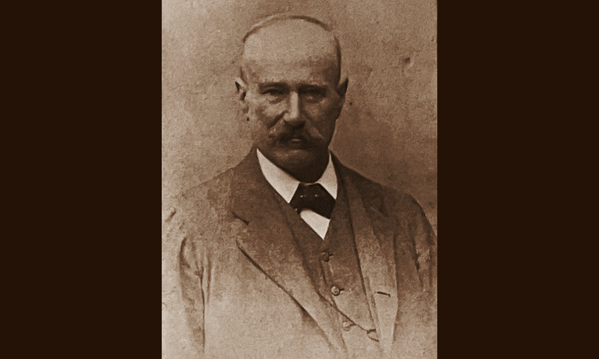

- Persone
-
- Vincenzo Ciampolini, 1838–1930, antiquario
- Opere transitate
- Catalogo della Fondazione Zeri →
Vincenzo Ciampolini (1838-1930) fu un antiquario e impresario originario di Sestri Levante. Stando alle memorie di Ugo Ojetti, iniziò la propria carriera intorno alla metà degli anni Sessanta, vendendo mobili e armi antiche, e in un primo momento si legò all'antiquario Giuseppe Giacomini, titolare di una casa d'aste a Roma. Nel giro di poco tempo riuscì ad ampliare notevolmente il suo giro di affari arrivando ad acquistare, nel 1874, palazzo Moroni in Borgo Nuovo a Roma. Nel corso degli anni Settanta la sua impresa viene registrata con due indirizzi distinti: in Piazza Santa Maria Novella 3, a Firenze, che rappresentò la sede storica dell'attività, e in Borgo Vecchio 165, a Roma. La sede romana venne poi spostata prima in un locale del Foro Romano e poi dal 1891 in Trinità dei Monti 9.
Nel 1877 aprì un laboratorio di ebanisteria, stipetteria e falegnameria in via Malcontenti 4 a Firenze sotto il nome di "Fabbrica di Mobili Artistici. Pia Casa di Lavoro", destinato alla creazione di mobili di lusso. Ciampolini era solito frequentare tutte le vendite all'asta romane e fiorentine, durante le quali spesso comprava oggetti destinati alla sua clientela nazionale e estera, di cui faceva parte anche Wilhelm von Bode.
Con l'inizio del nuovo secolo, Ciampolini si dovette via via ritirare sempre più dal commercio, dedicando maggior tempo all'attività di impresario, come dichiarato da lui stesso in una lettera inviata a "La Nazione" il 4 marzo 1909. Ancora nel 1912, tuttavia, sulle pagine della rivista "Il conoscitore" viene ricordato come un ricco e influente mercante, dotato di una conoscenza profonda del commercio. Fu infatti una figura chiave per molti colleghi fiorentini, tra cui Stefano Bardini (1836-1922) e Luigi Grassi (1858-1937), ai quali elargì prestiti importanti per lo sviluppo delle proprie attività. Le ultime attestazioni nel commercio di opere d'arte fanno riferimento alla sua abitazione posta in via del Sole 11 a Firenze, da dove tuttavia continuava a commerciare ricevendo privatamente la clientela, almeno fino al 1915.
Bibliografia essenziale
- Commemorazione di Vincenzo Ciampolini, in «L'Antiquario», XVIII-XXV, 1, 1932, p. 46
- Bargellini, S. (1981), Antiquari di ieri a Firenze, Firenze, Bonechi
- Bellini, L., De Chirico, G. (1947), Nel mondo degli antiquari, Firenze, Arnaud
- Bertelli, B. (2011-2012), Commercio antiquario a Firenze nel primo trentennio dopo l’Unità d’Italia: protagonisti, transazioni e circolazione delle opere d’arte, tesi di Dottorato, Università degli Studi di Udine
- Del Giorgio, L. (2021-2022), Vincenzo Ciampolini. Negoziante e Commissario di oggetti d'arte antichi nella Firenze tra diciannovesimo e ventesimo secolo, Università degli Studi di Firenze
- Giometti, C. (2019), Stefano Bardini, Vincenzo Ciampolini e un ciclo di affreschi di Giovanni da San Giovanni in palazzo Pucci, in Ciancabilla, Giometti, pp. 165-176
- Ojetti, U. (1954), I taccuini: 1914-1943, Firenze, Sansoni
- Tolosani, D. (1912), Vincenzo Ciampolini, in «Il Conoscitore», V, 8-9, pp. 43-45